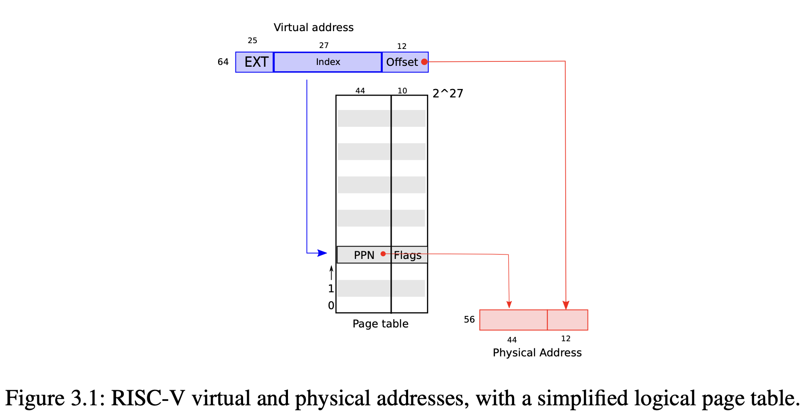
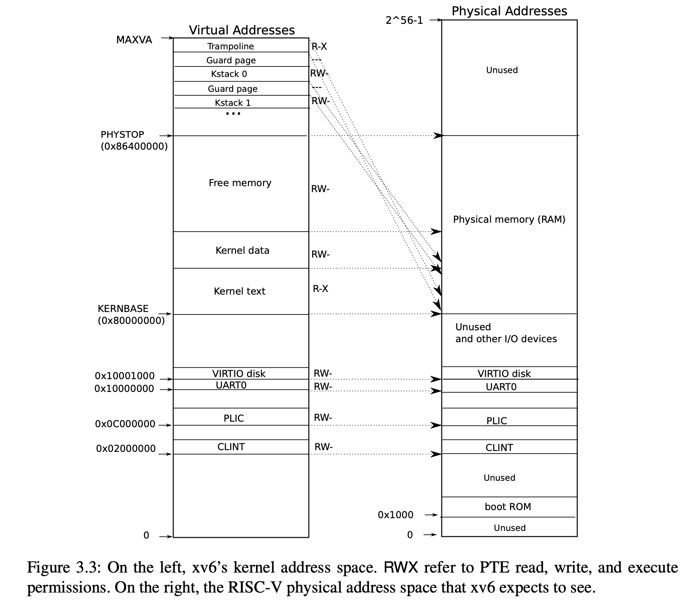
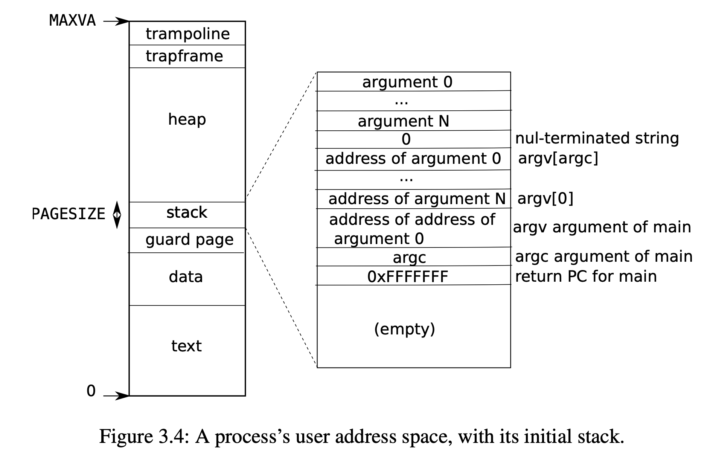

Xv6 Page Table
Xv6 Page Table
Learning xv6-riscv-book Chapter 3 Page tables
[TOC]
Isolate different process’s address spaces and to multiplex them onto a single physical memory.
Paging hardware
Sv39 RISC-V:
Xv6 runs on Sv39 RISC-V: only the bottom 39 bits of a 64-bit virtual address are used; the top 25 bits are not used.
a RISC-V page table: an array of $2^{27}$ page table entries (PTEs)
a PTE: a 44-bit physical page number (PPN) and flags.
[Logically] The paging hardware: virtual address => physical address:
- handle a 39-bit virtual address
- top 27 bits of the 39 bits: index into the page table to find a PTE
- bottom 12 bits: do not change
- making a 56-bit physical address:
- top 44 bits come from the PPN in the PTE
- bottom 12 bits are copied from the original virtual address.

Virtual-to-physical address translations: aligned chunks of $2^{12}$ bytes. (Such a chunk is called a page.)
[Actually] Virtual -> Physical address translation:

- page table: three-level tree: pages of PTEs
- each PTEs page: 4096-bits: contains 512 PTEs to the next level
- the top 27 bits virtual address to find PTE:
- 9 bits => tree root
- 9 bits => mid level
- 9 bits => final PTE
In translation: any of the three required PTEs is not present:
- paging hardware raises a page-fault exception
- kernel handles the exception
Flag bits of PTE: how the associated virtual address is allowed to be used:
PTE_V: is the PTE present?PTE_R: allowed to read (to the page)?PTE_W: allowed to write?PTE_X: interpret the content of the page as instructions and executePTE_U: allowed user mode instructions to access the page
(defined in kernel/riscv.h:329-333)
Tell the hardware to use a page table:
- Kernel: write the physical address of the root page-table page into the
satpregister - CPU: translate all addresses generated by subsequent instructions using the page table on its
satp - Each CPU has its own
satp: different CPUs can run processes with a private address space described by its own page table.
Notes about terms:
- Physical memory refers to storage cells in DRAM
- A byte of physical memory has an address, called a physical address
- Instructions use only virtual addresses
- The paging hardware translates virtual addresses to physical addresses, and then sends them to the DRAM hardware to read or write storage
- virtual memory ≠ virtual addresses
- virtual memory: the collection of abstractions and mechanisms the kernel provides to manage physical memory and virtual addresses.
- virtual addresses & physical addresses: a physical object
Kernel address space
- User address space: Xv6 maintains one page table per process.
- Kernel address space: an additional single page table to give the kernel itself access to :
- physical memory
- hardware resources at predictable virtual addresses
kernel address space layout: kernel/memlayout.h

QEMU physical address space:
- below
0x80000000: device interfaces to software as memory-mapped control registers:- kernel interacts with the devices by reading/writing these special physical addresses.
0x80000000 ~ PHYSTOP: RAM (physical memory)PHYSTOP = at least 0x86400000:- kernel gets at RAM and memory-mapped device registers using “direct mapping” (
VA=X -> PA=X) - the kernel itself is located at
KERNBASE=0x80000000in both the virtual address space and in physical memory
- kernel gets at RAM and memory-mapped device registers using “direct mapping” (
- special kernel virtual addresses aren’t direct-mapped:
- The trampoline page: mapped at the top of the virtual address space (the same as user page tables)
- NOTE: the page holding trampoline is mapped twice in the kernel virtual address space: once at top of the virtual address space and once with a direct mapping
- The kernel stack pages: Each process has its own kernel stack mapped below an unmapped guard page (whose PTE is invalid: PTE_V is not set).
- guard page: if the kernel overflows a kernel stack into guard page => a kernel panic
- without guard page: overflowing stack overwrite other kernel memory => any incorrect operation
Creating an address space
Central data structure:
pagetable_t: a pointer to a RISC-V root page-table page
Functions:
kvmXXX: manipulate the kernel page tableuvmXXX: manipulate a user page table- others: usedfor both
Key functions:
walk: finds the PTE for a virtual addresmappages: installs PTEs for new mappingscopyin: copy from user to kernel (system call arguments)copyout: copy from kernel to user
Boot:
- main -> kvminit: create the kernel’s page table
- (kvminit -> kvmmap -> mappages -> walk)
- main -> kvminithart: install the kernel page table
- main -> procinit (in kernel/proc.c): allocates a kernel stack for each pro- cess
Each RISC-V CPU caches page table entries in a Translation Look-aside Buffer (TLB):
- xv6 changes a page table => must tell the CPU to invalidate corresponding cached TLB entries.
sfence.vmainstruction: flushes the current CPU’s TLB- in
kvminithartafter reloading thesatpregister - in the
trampolinecode that switches to a user page table before returning to user space (kernel/trampoline.S:79)
Physical memory allocation
The kernel must allocate and free physical memory at run-time for page tables, user memory, kernel stacks, and pipe buffers.
- uses the physical memory between the end of the kernel and PHYSTOP for run-time allocation
- allocates and frees whole 4096-byte pages at a time
- keeps track of which pages are free by a linked list：
allocation: removing a page from the linked listfreeing: adding the freed page to the list
Physical memory allocator
allocator: kalloc.c
- data structure: free list
- element:
struct run - protected: spin lock
- element:
main calls kinit to initialize the allocator:
- initializes the lock
- initializes the free list to hold every page in [end of the kernel, PHYSTOP]
Process address space
- Each process has a separate page table
- switch processes => change page table
- process ask for more memory:
- xv6 uses kalloc to allocate physical pages
- adds PTEs to the process’s page table

sbrk
sbrk: the system call for a process to shrink or grow its memory.
implement:
sbrk => kernel/proc: growproc => uvmalloc / uvmdealloc => kalloc / kfree
exec
exec: creates the user part of an address space.
- opens the named binary
pathusingnamei - checks the ELF header
- allocates a new page table with no user mappings with
proc_pagetable - load program into memory:
- allocates memory for each ELF segment with
uvmalloc - loads each segment into memory with
loadseg
- allocates memory for each ELF segment with
- allocates and initializes the user stack
- copies the argument strings to the top of the stack, recording the pointers to them in ustack
EOF
1 | # By CDFMLR 2021-03-09 |
顶部图片来自于小歪API，系随机选取的图片，仅用于检测屏幕显示的机械、光电性能，与文章的任何内容及观点无关，也并不代表本人局部或全部同意、支持或者反对其中的任何内容及观点。如有侵权，联系删除。